TDD in the AI EraBarry S. StahlSolution Architect & DeveloperMicrosoft .NET MVPPhysics & Math Nerd@bsstahl@cognitiveinheritance.comhttps://CognitiveInheritance.com |

|
Favorite Physicists & Mathematicians
Favorite Physicists
Other notables: Stephen Hawking, Edwin Hubble, Leonard Susskind, Christiaan Huygens |
Favorite Mathematicians
Other notables: Daphne Koller, Grady Booch, Leonardo Fibonacci, Evelyn Berezin, Benoit Mandelbrot |
Fediverse Supporter
|

|
Some OSS Projects I Run
- Liquid Victor : Media tracking and aggregation [used to assemble this presentation]
- Prehensile Pony-Tail : A static site generator built in c#
- TestHelperExtensions : A set of extension methods helpful when building unit tests
- Conference Scheduler : A conference schedule optimizer
- IntentBot : A microservices framework for creating conversational bots on top of Bot Framework
- LiquidNun : Library of abstractions and implementations for loosely-coupled applications
- Toastmasters Agenda : A c# library and website for generating agenda's for Toastmasters meetings
- ProtoBuf Data Mapper : A c# library for mapping and transforming ProtoBuf messages
http://GiveCamp.org

Achievement Unlocked

The Abstraction Ladder
|

|
Judgement Required
|

|
Theory of Constraints
|

|
Principle - Simplest Thing First
|

|
Red-Green-Refactor Defines Scope
|
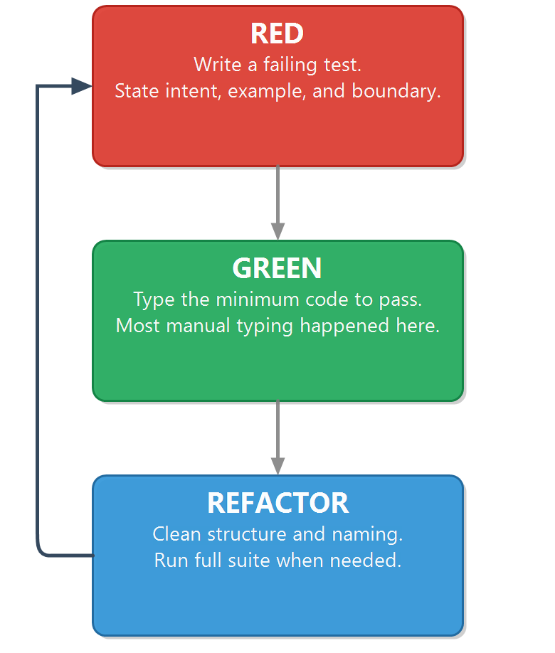 |
TDD Helps Keep Scope In-Check
|
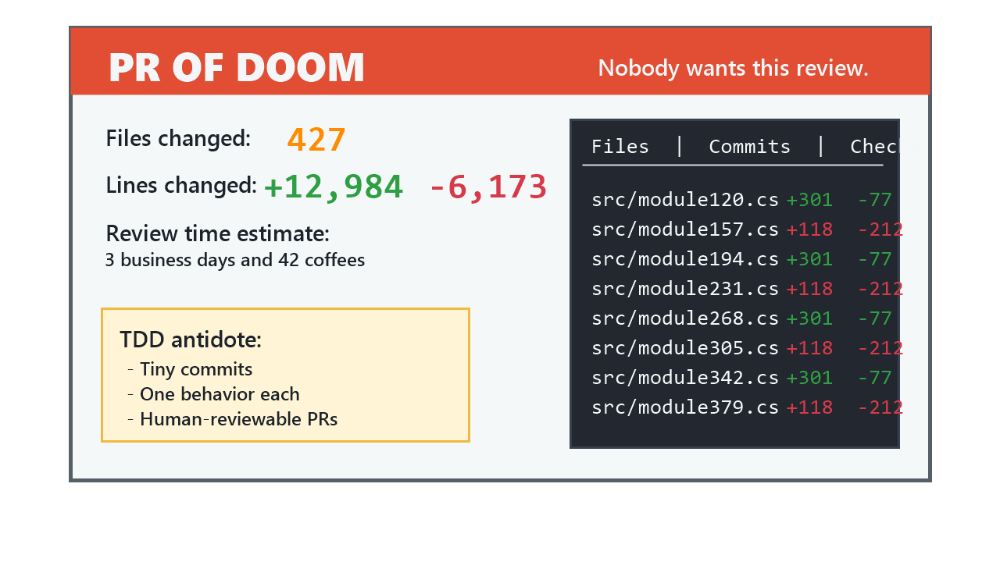 |
Tests Matter More Than the Code
Key takeaways - If the tests are right, the code can be anything - If the tests are wrong or missing, the code can't be trusted |

|
Coupling and Cohesion
|

|
The Facade Family of Patterns
|

|
What Do We Need to Test?
|
What Do We Need to Test?
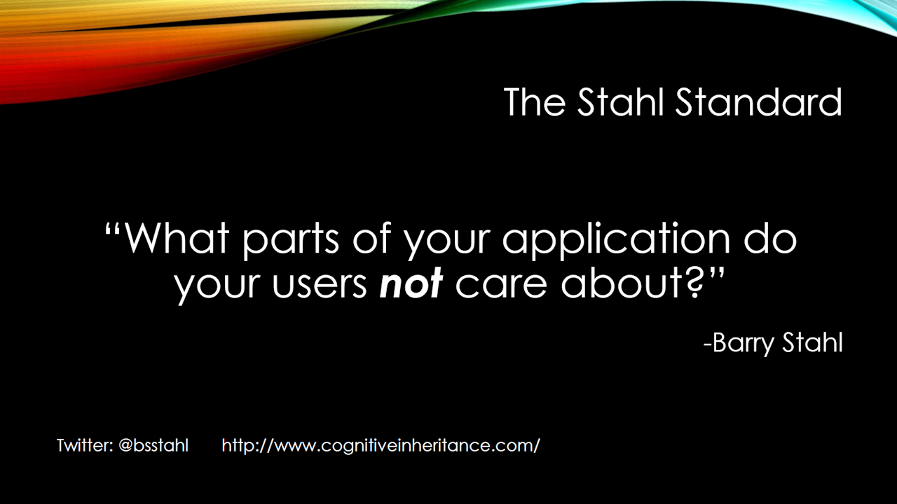
- Image Source: Jeremy Clark (2015), Unit Testing Makes me Faster
- Jeremy's article: Unit Test Coverage: What Parts of Your Application Do Your Users Not Care About?
Testing In Isolation
|

|
Recommended Approach
|
TDD Before AI
|
Tests Drive the Next Action
Change Password service
|
Test Cases:[*] < [ ] old <> current → false [ ] All rules satisfied → true |
Method Stubs
| Language | Canonical Stub Mechanism |
|---|---|
| C# | throw new NotImplementedException(); |
| C++ | throw std::logic_error("Not implemented"); |
| Elixir | raise "not implemented" |
| Go | panic("not implemented") |
| Java | throw new UnsupportedOperationException("Not implemented"); |
| JavaScript / TypeScript | throw new Error("Not implemented"); |
| Kotlin | TODO("Not implemented") |
| PHP | throw new \BadMethodCallException("Not implemented"); |
| Python | raise NotImplementedError("Not implemented") |
| Ruby | raise NotImplementedError, "Not implemented" |
| Rust | todo!() |
| Swift | fatalError("Not implemented") |
Stub the API Surface
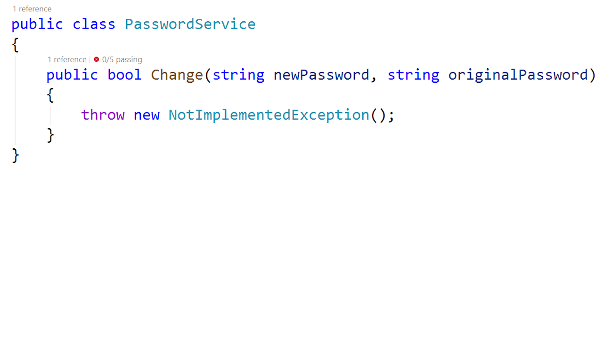
Min Length Test
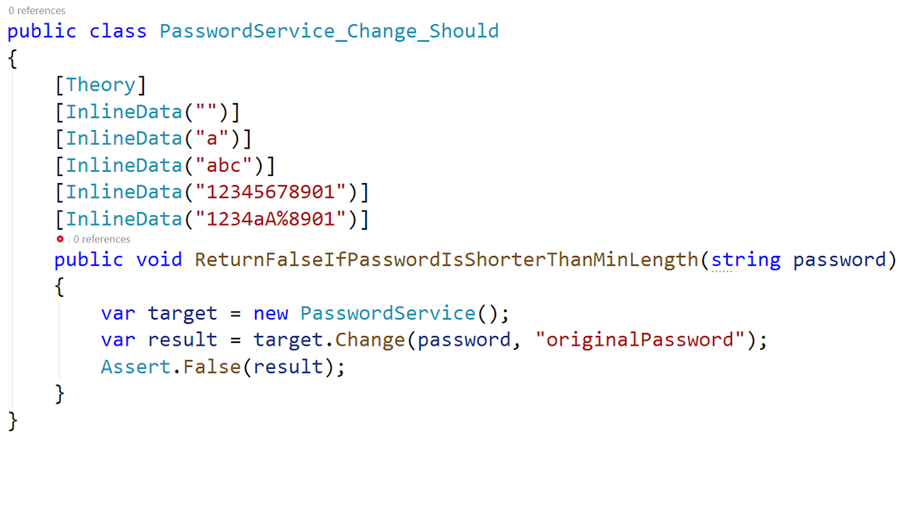
Tests Must Fail Properly
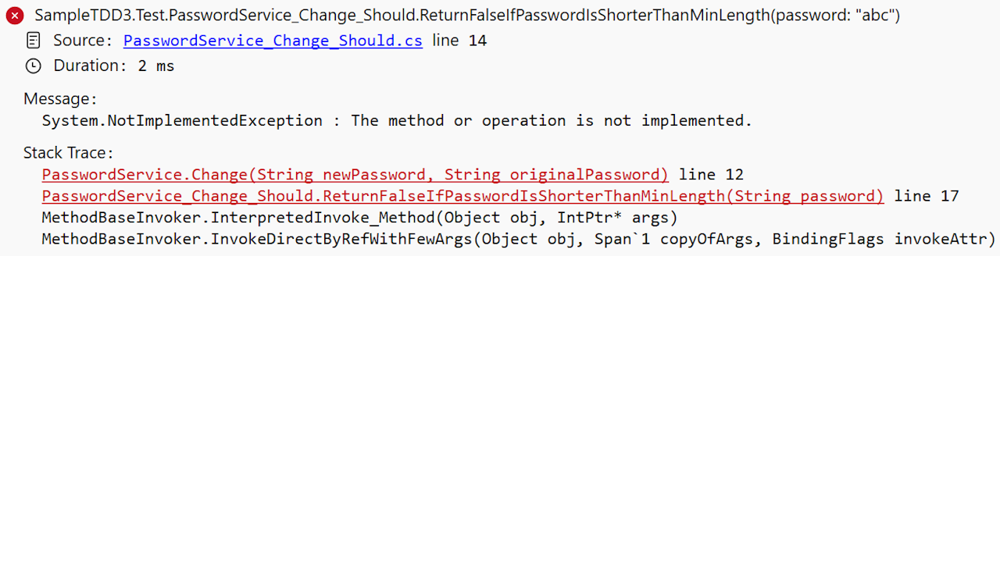
Do the Simplest Thing
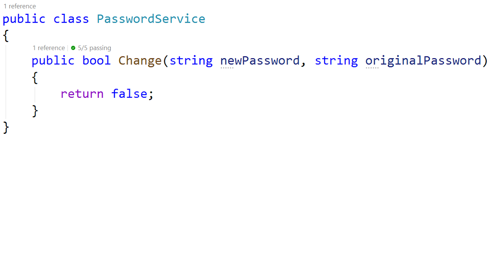
Refactor-Now Signals
|
Next Test Decision
|
|
Same Discipline-New Pairing
|
AI as a Pairing Partner
|

|
TDD with AI Coding Agents
|
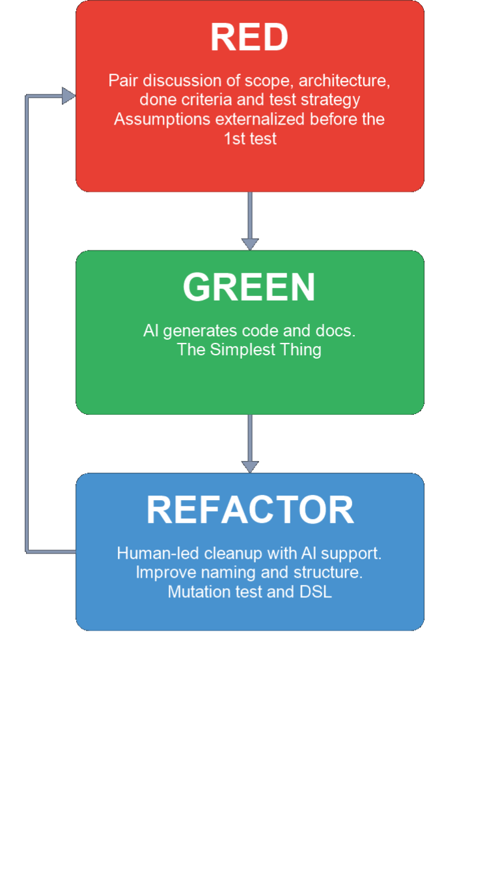 |
Red Step: Establish Constraints
|
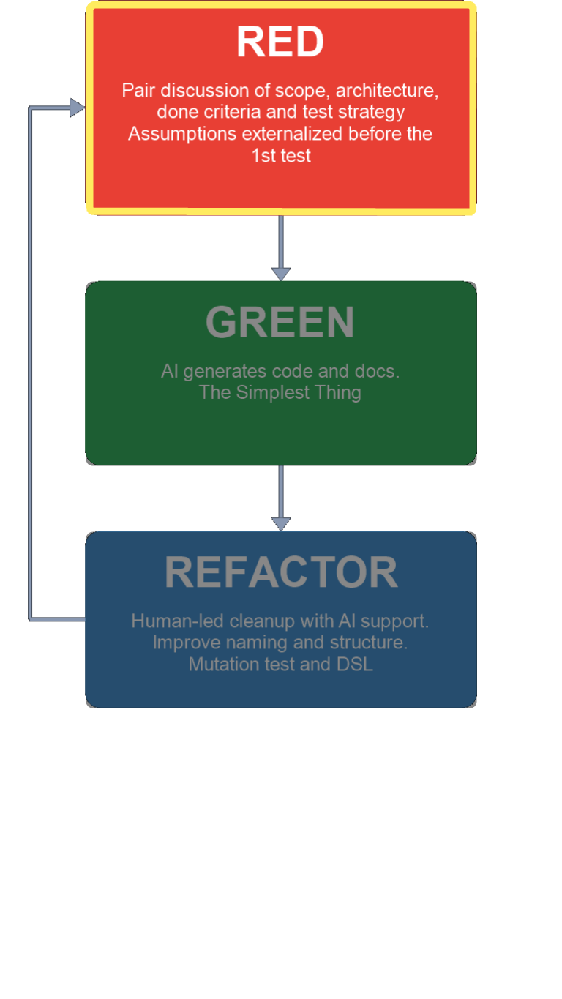 |
Green Step: Implement Minimal Pass
|
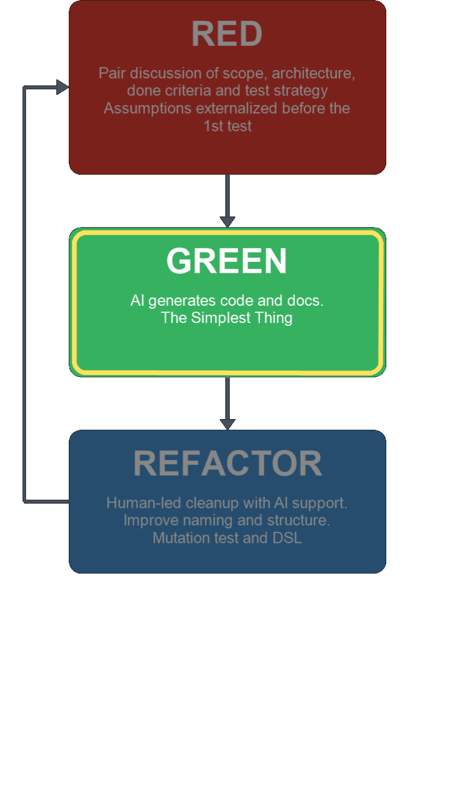 |
Refactor Step: Prove and Improve
|
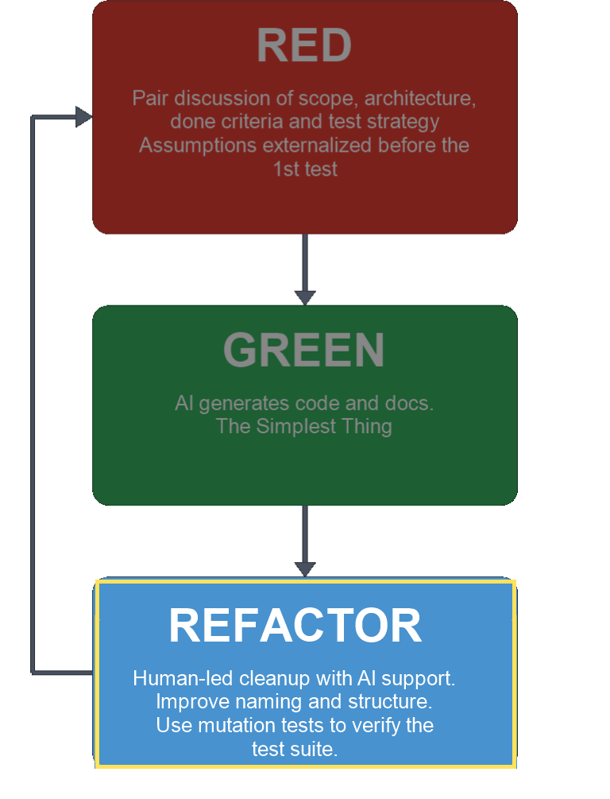 |
More & Better Refactorings
|
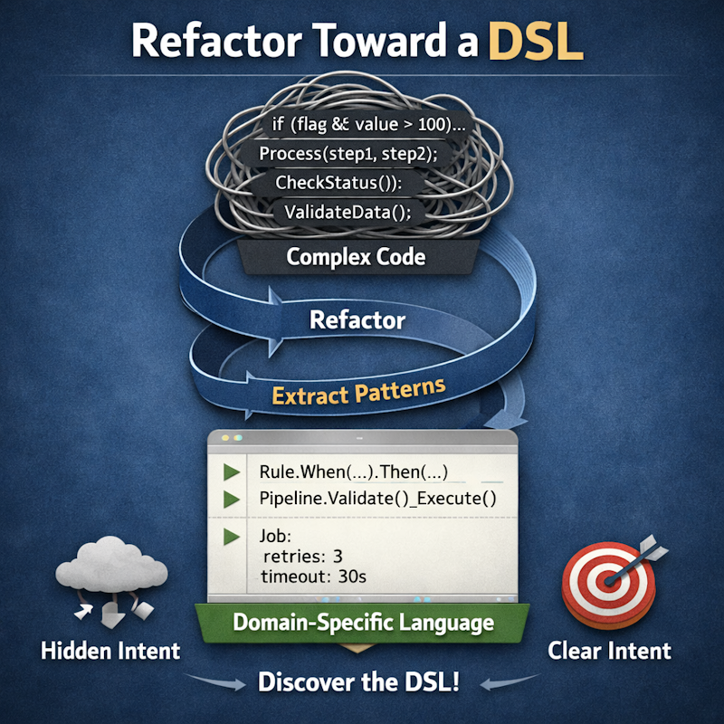 |
Validate Using Coverage
|
|
Coverage Decision Gate
|
Validate Tests with Mutations
|

|
Mutation Testing in the AI Era
|

|
Some Types of Mutations
|

|
Mutation Test Prompts
|

|
Optional Amplifiers, Core Workflow
|
Human-AI Adoption Patterns
Research: Barke et al. (2023); Nair et al. (2023); Chen et al. (2021). |

|
Types of tools Available
|
Code Generation Tools
|
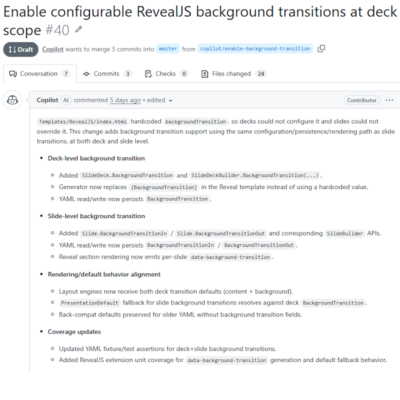 |
Specification Generation Tools
|
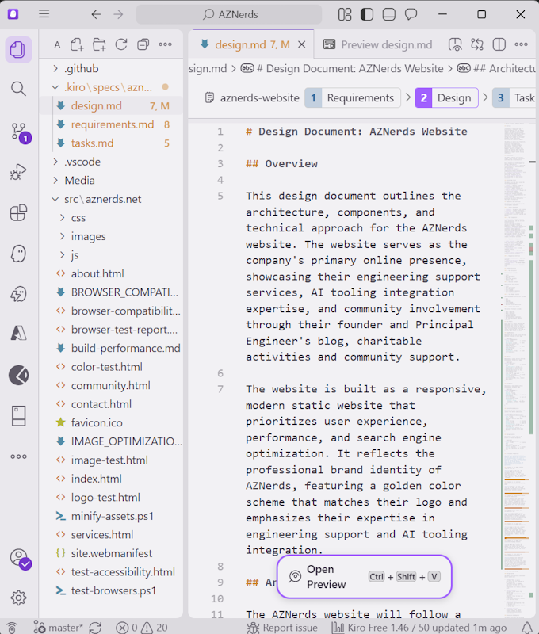 |
Workflow Tools
|
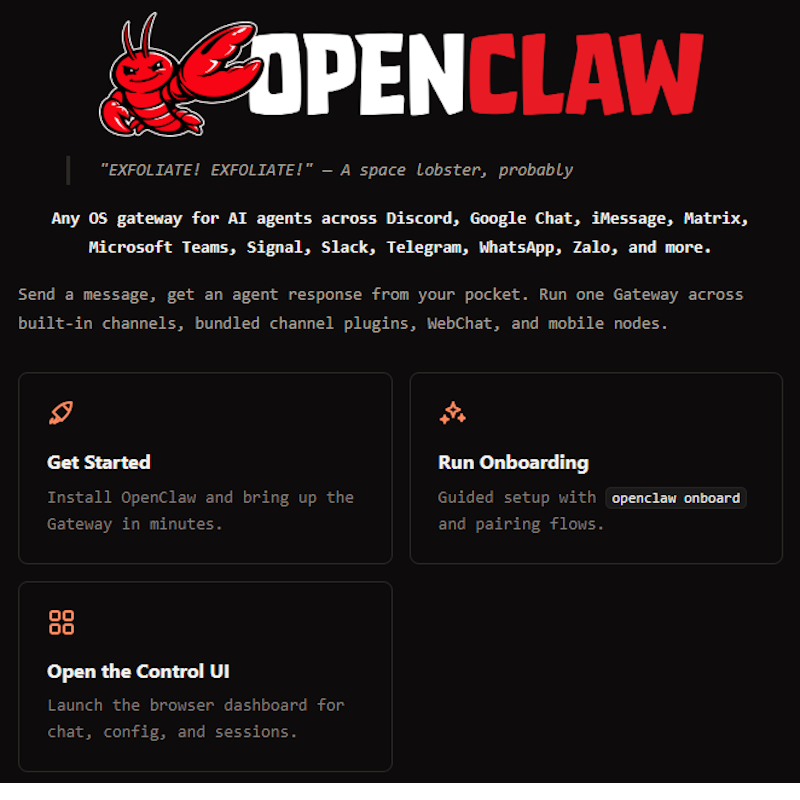 |
Tool Matrix by Purpose
| Tool | Code Gen | Spec Gen | Workflow | Reference |
|---|---|---|---|---|
| Claude | Primary | Supported | Supported | Claude Code Docs |
| Cline/Roo | Primary | Supported | Supported | Cline Docs & Roo Docs |
| Copilot Chat | Primary | Supported | Supported | Copilot Chat Docs |
| Copilot CLI | Primary | Supported | Supported | Copilot CLI Docs |
| Cursor | Primary | Supported | Supported | Cursor Docs |
| Kiro | Supported | Primary | Supported | Kiro Docs |
| OpenClaw | Supported | Supported | Primary | OpenClaw Repos |
| OpenCode | Primary | Supported | Supported | OpenCode Repos |
| OpenSpec | Supported | Primary | Supported | OpenSpec Repos |
| SpecKit | Supported | Primary | Supported | SpecKit Repo |
| Squad/Ralph | Supported | Supported | Primary | Squad Repos |
AI Coach
|
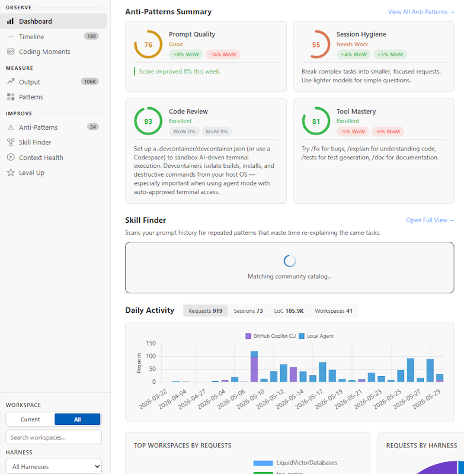 |
Who Succeeds in the AI Era
|
Start Where You Are
|
Pick a Project You Know
|
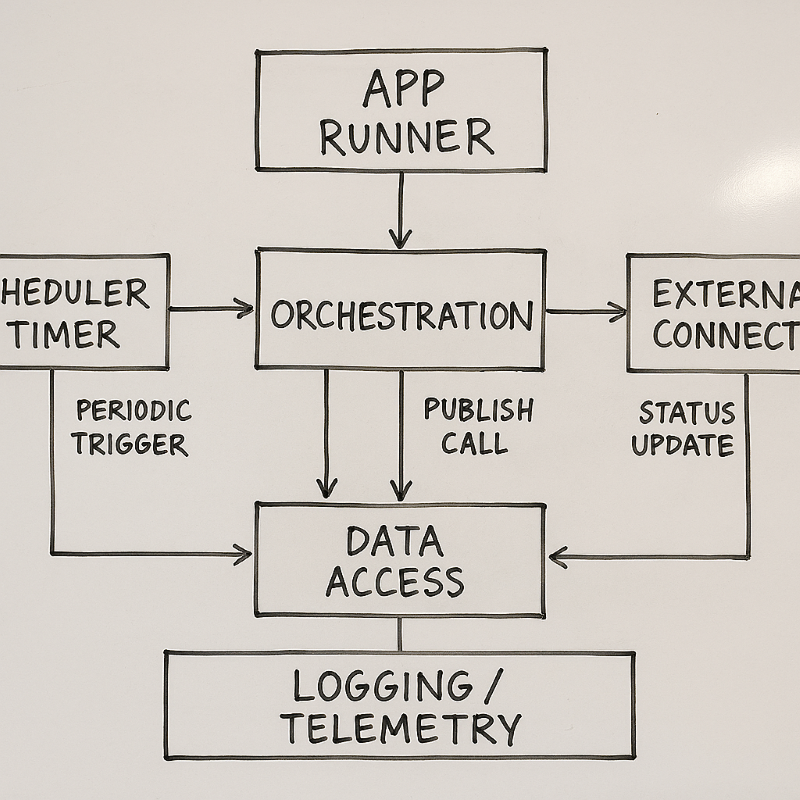 |
Experimentation Options
|

|